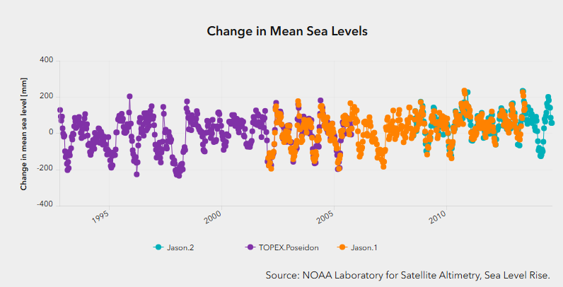

PP434 - Portfolio
This page is the portfolio for PP434 class.
Week 1: Embedding existing charts
Hosting three existing charts from various sources.
Chart A: Food-related Emissions
A chart showing greenhouse gas emissions per kg of food, split by supply chain stage.
Chart B: Decades of US Inflation Volatility
An interactive chart of the U.S. annual inflation rate.
Chart C: UK Nuclear Output Changes
A chart showing UK nuclear power output over time, built with the Economics Observatory Data Hub
Source: Economics Observatory Data Hub
Week 2: Create visualisations
Create two visualisations of our own.
Tyre Strategies of the Top 5 at the 2026 British GP
This stacked bar chart shows how many laps each of the top five finishers ran on each tyre compound at Silverstone. Most of them switched to softs for the final laps after a late Virtual Safety Car, triggered by Max Verstappen’s crash at Stowe corner, except George Russell who stayed on his original one-stop strategy.
Data source: FastF1 Python library, https://github.com/theOehrly/Fast-F1. Race data from Formula 1 live timing, accessed 10 October 2026.
Trends in Five Pollutant Releases, 2011-2022
This chart compares how releases of five pollutants changed between 2011 and 2022. The values are rebased to 2011 = 100, so the chart shows relative change. Four of the five pollutants ended 2022 below their 2011 level, with nitrogen oxides falling the most. Ammonia is the exception: it rose until 2018 and, although it has since fallen, was still above its 2011 level in 2022.
The data covers air and water releases reported to seven national and regional PRTRs (39 countries) and does not include releases to land or all pollutants and registers.
Data source: OECD, Monitoring and preventing industrial pollution (OECD PRTR Data Explorer), accessed 9 October 2026.
Week 3: Policy Debate
Produce two charts that support or refute a topic of policy debate.
Policy Topic: As public health spending takes up a growing share of GDP, should the UK government spend even more on health?
Comment: The US spends a higher share of GDP on health yet has lower life expectancy. Spending more doesn’t ensure better health; it could depend on other factors, such as how the money is allocated.
Data source: World Bank, Current health expenditure (% of GDP) and Life expectancy at birth, total (years), accessed 23 October 2026.
Week 4: Replication
Re-create, then improve, someone else’s chart
Original chart
The original chart is “Change in Mean Sea Levels,” filter with Andaman sea, from IMF Climate Change Indicators Dashboard. It shows data from satellite altimeters that have monitored the same ocean surfaces since 1992 (TOPEX/Poseidon, Jason-1, Jason-2 and Jason-3).

Replication
Improved the chart by combining all satellites into one series since they measure the same things, faded the noisy readings, and added a smoothed trend line to make the overall rise clear.